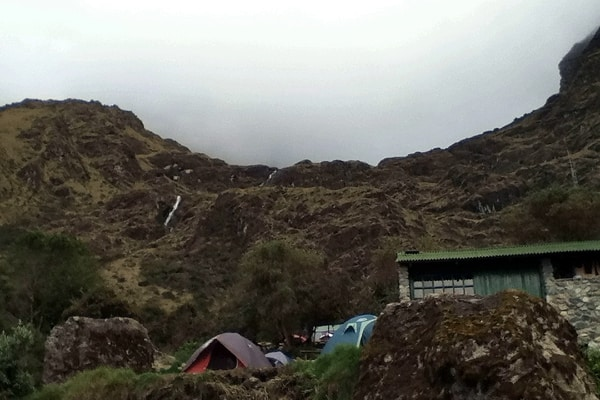

The high valley camp after the hardest day — relief, cold air, and the start of Day 3’s ruin-rich itinerary.

Pakaymayu (Pacaymayo / Pacaymayu — spellings vary) is the usual Camp 2 after the brutal climb and descent around Dead Woman's Pass. Our elevation is about 11,781 ft (3,590 m) — still high, but a psychological relief after the saddle.
Quechua-oriented popular glosses sometimes render the name in connection with a “hidden” or silver-colored river valley; treat poetic translations as guide color unless a linguistic source is cited.
CAMP 2 · tour hash #camp-day-2 (hash spelling differs from URL slug).
Our interactive Mapbox tour follows GPS collected on the classic Inca Trail — fly through this stop and the full route to Machu Picchu.